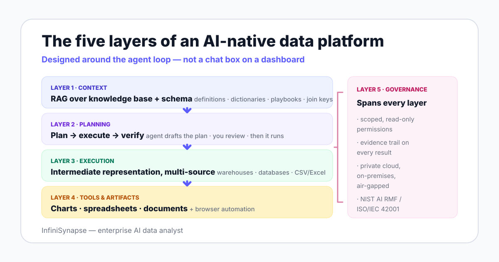

The architectural anchor for the category comes from Anthropic's Building Effective Agents: agents are systems where the model directs its own process and tool usage. An AI-native data platform is the infrastructure that makes that loop safe and repeatable on enterprise data.
If you want the workflow-level view of the same shift — what a data agent is and how it differs from an assistant — start with our definition guide. This page covers the platform underneath it.
Almost every analytics vendor now claims AI, so the label tells you nothing. The structural question is whether the system was designed around the agent loop, or whether AI features were attached to a workflow a human still drives end to end.
You can test this in one demo question: ask the tool to answer something its dashboards were never built for. A bolted-on system falls back to its semantic model; an AI-native one retrieves context, drafts a plan, and executes.
| Dimension | AI-bolted-on (BI + chat feature) | AI-native data platform |
|---|---|---|
| Design center | The dashboard; AI assists an existing human workflow | The agent loop; dashboards are one output among several |
| Context handling | Whatever fits the prompt or the pre-built semantic model | A retrieval layer over business knowledge and live schema |
| Execution model | Queries pre-modeled metrics inside one BI tool | Plans and runs work across warehouses, databases, and files |
| Failure handling | A wrong answer looks identical to a right one | A verification step plus an evidence trail you can review |
| Extensibility | Limited to the host tool's feature set | A tool layer: spreadsheets, documents, browser automation |
| Question scope | Known metrics, monitored over time | Open-ended, cross-source investigation |
| Deployment | Follows the BI vendor's cloud model | Cloud, private cloud, on-premises, or air-gapped |
The bolted-on pattern is not wrong — it is the copilot pattern, and it has real strengths in mature BI estates. We unpack that boundary in data agent vs AI copilot and in our AI-native vs augmented analytics comparison.
Strip the branding from any credible product in this category and you find the same five layers. Each layer exists to catch a specific class of failure, which is why skipping one shows up as a recurring error pattern rather than a missing feature.

Before any query runs, the platform retrieves what the question actually means in your company: metric definitions, data dictionaries, analysis playbooks, past cases, and the live schema of connected sources. This is retrieval-augmented generation applied to analytics: the model is grounded in your definitions instead of guessing plausible ones.
InfiniSynapse implements this as a self-developed LLM-Native RAG with two recall paths — business knowledge recall and schema recall — plus a second context channel from web search when external facts matter. The layer compounds over time, which is why we treat it as memory: see how data agent memory works.
The failure this layer catches: a model that does not know "active user" means 30-day rolling in your company will confidently compute the 7-day version. No amount of model quality fixes a missing definition.
An AI-native platform drafts an explicit analysis plan before touching data: sources, join keys, time windows, output format. The ReAct paper (2022) established why — interleaving reasoning steps with actions measurably reduces error compared with generating an answer in one pass.
InfiniSynapse exposes this as Plan mode: the agent drafts the plan, you review and adjust it, and only then does execution start. That human checkpoint is also the main safeguard discussed in our autonomous data agent guide — autonomy without a reviewable plan is just speed without brakes.
Direct SQL generation hit a ceiling: on BIRD, human engineers reach 92.96% execution accuracy while models still trail, and the earlier Spider benchmark showed the same pattern on cleaner schemas. Per-dialect SQL also fragments: every database speaks a slightly different language.
The AI-native answer is an intermediate representation — a structured query format optimized for what language models write reliably. InfiniSynapse's version is InfiniSQL, which connects to a multi-source execution layer spanning Snowflake, Supabase, PostgreSQL, MySQL, and CSV or Excel files, so one plan can join data across systems without an ETL migration first.
Real analysis work produces charts, spreadsheets, documents, and collected data — not just an answer in a chat window. An AI-native platform therefore needs an extensible tool layer the agent can call during execution.
In InfiniSynapse this is the Agent Tool Market: Excel editing, Word and PPT generation, file conversion, and browser operations. Browser Use, delivered through a Chrome extension, extends execution to the open web — data collection, form filling, page extraction, and multi-step web workflows.
The governance layer decides whether the other four are usable in production: scoped read-only credentials, an evidence trail attached to every result, and deployment that matches where your data must live. InfiniSynapse ships private cloud, on-premises, and air-gapped options via Docker Compose, with Windows and macOS clients.
Three external frameworks give you shared language for this layer: the NIST AI Risk Management Framework (govern, map, measure, manage), ISO/IEC 42001:2023 for AI management systems, and the EU AI Act's phased obligations. The evidence-trail half of the layer is the subject of explainable AI data analysis.
A platform is AI-native when removing the language model would collapse the architecture — not just disable a feature.
Use this table in vendor calls, ours included. One question per layer keeps the conversation on architecture instead of feature labels.
| Layer | Question to ask the vendor | What good looks like |
|---|---|---|
| 1. Context | Where do our metric definitions live, and how does the model retrieve them? | A maintained knowledge base — dictionaries, definitions, playbooks, past cases — cited back in the agent's plans |
| 2. Planning | Can we see and edit the plan before anything executes? | An explicit, editable plan for every run; no silent execution path |
| 3. Execution | How does one question reach data in two databases and a file? | An intermediate representation routed through a multi-source execution layer; no "migrate everything first" prerequisite |
| 4. Tools & artifacts | What can the agent produce beyond a text answer? | Charts, spreadsheet edits, document generation, and browser workflows, each logged as part of the run |
| 5. Governance | Can it run inside our boundary with read-only credentials and a full evidence trail? | Private cloud, on-premises, or air-gapped deployment; scoped permissions; plan, queries, and sources attached to every result |
Here is a documented InfiniSynapse demonstration, chosen because it is the shape of question that breaks bolted-on tools: "Using phone number as the key, find the highest-spending customers across the JD and Tmall platforms, match their real names from a CSV file, and chart the ranking."
| Layer | What happens in this run |
|---|---|
| 1. Context | The platform retrieves schema from both platform databases and the uploaded CSV, plus the knowledge-base note that phone number is the customer-matching key |
| 2. Planning | Plan mode drafts the steps — aggregate spend per customer on each platform, join on phone number, match names from the CSV, rank, chart — and you approve or adjust before execution |
| 3. Execution | InfiniSQL expresses the cross-source joins once, and the multi-source execution layer runs them across the two databases and the file without an ETL step |
| 4. Tools & artifacts | The ranking renders as a chart, and the result can flow into a spreadsheet or document through the tool layer |
| 5. Governance | The run executes under read-only credentials, and the answer ships with its plan, queries, and source list for review |
The traditional path for the same question is an integration project: migrate both sources into one warehouse, standardize the phone-number field, write the join, then visualize — days of work before the first answer. This workflow-level shift is what we mean by agentic analytics.
No team adopts this category from zero. Your starting point determines the effort, so here is the unvarnished version of each path.
Keep your dashboards — they stay the right tool for known-metric monitoring. The platform takes the investigation workload: connect one warehouse read-only, seed the knowledge base with your top metric definitions, and route open-ended questions to the agent.
Honest effort assessment: connection is fast, but context seeding is real work measured in weeks, and it stalls if your metric definitions only exist in people's heads. Undocumented definitions are the most common blocker we see, and no vendor fixes that for you.
Your semantic model is reusable context — port metric definitions into the knowledge base rather than starting over. The real change is workflow ownership: ChatBI answers questions about pre-modeled metrics, while an agent plans and executes analysis that was never modeled.
Honest effort assessment: technically the lightest path, but plan on a governance review as the long pole. An agent that executes across sources needs a permissions and audit conversation your chat-only pilot never triggered.
Internal prompt-plus-SQL scripts prove demand, and they are the right prototype. They typically lack the layers that make results trustworthy at scale: retrieval over governed definitions, plan review, verification, and an evidence trail.
Honest effort assessment: porting context out of prompts into a knowledge base takes deliberate effort, and your engineers may reasonably prefer their own code. Keep the scripts for narrow recurring jobs; move open-ended, multi-user analysis onto the platform where governance lives.
This is a vendor page telling you when not to buy, because a wrong-fit deployment fails publicly and poisons the category internally. Match your situation honestly.
If two or more items in the right-hand column describe you, start with classic BI or a metric-governance effort and revisit the category in a quarter. The architecture will still be here.
Connect a database or upload a file, ask a question that spans them, and watch the plan, execution, chart, and evidence trail. One real run on your data beats any architecture diagram — including ours.
Try InfiniSynapse onlineLast updated: 2026-06-12 · Next scheduled review: 2026-09-12
The five-layer model is this team's synthesis of published agent research (ReAct, Building Effective Agents), public benchmarks (BIRD, Spider), governance frameworks (NIST AI RMF, ISO/IEC 42001, the EU AI Act), and InfiniSynapse product documentation. Product capabilities attributed to InfiniSynapse come from product documentation; the cross-source walk-through is a documented product demonstration, not an independent benchmark.
Conflict of interest: InfiniSynapse publishes this guide and sells in this category. To reduce bias, the page includes a vendor-neutral evaluation table, an explicit section on when not to buy an AI-native platform, and external sources for every numeric claim.
Update cadence: Reviewed every 90 days for terminology, source links, benchmark figures, regulatory dates, and schema consistency.